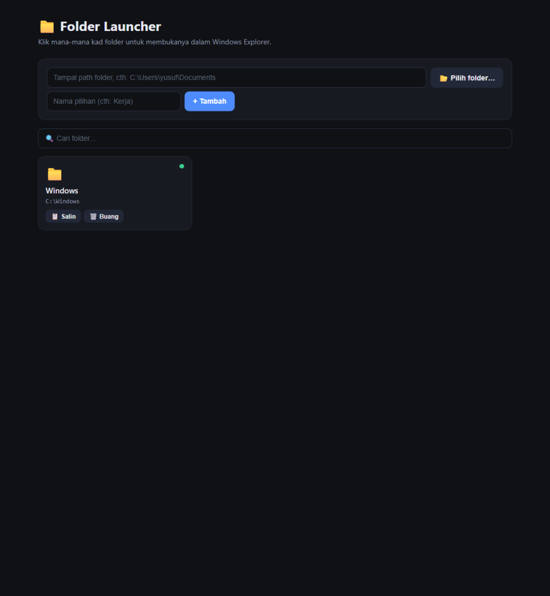

Simpan senarai path folder kegemaran anda dalam satu laman, kemudian klik sahaja — folder terus terbuka dalam Windows Explorer dan terus aktif di hadapan.

Antara muka Folder Launcher — kad folder, carian, dan status folder.
Kad folder dibuka dalam Windows Explorer dan terus menjadi tetingkap aktif di hadapan.
Tampal path manual atau gunakan dialog pilih folder Windows yang sebenar.
Tapis senarai ikut nama atau path semasa anda mula menaip.
Titik hijau = folder wujud; merah = folder tiada (cth. drive luaran ditanggal).
Salin semula path mana-mana folder dengan satu klik.
Senarai disimpan dalam fail paths.json biasa — mudah dibackup, tiada cloud.
C:\Tools\FolderLauncher). Perlu Python 3 terpasang.start.bat — server kecil bermula dan browser terbuka sendiri di http://127.0.0.1:8765.